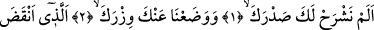
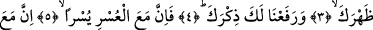
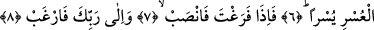

SENİN ŞÂNINI
YÜCELTMEDİK Mİ?
Bismillâhirrahmânirrahîm
1. Biz senin göğsünü açıp genişletmedik mi?
2- 3. Belini büken yükünü senden alıp atmadık mı?
4. Senin şânını ve ününü yüceltmedik mi?
5. Elbette zorluğun yanında bir kolaylık vardır.
6. Gerçekten, zorlukla beraber bir kolaylık daha vardır.
7. Boş kaldın mı, hemen (başka) işe koyul!
8. Ve yalnız Rabbine yönel!
Rağıb Isfahânî’nin ifâdesine göre “şerh”; et ve benzeri herhangi bir nesneyi yaymak
demektir. Dolayısıyla; “şerhu’s-sadr” deyimi bu kökten türemedir. Anlamı göğsün ilahi
nur, Allah katından gelen sekinet ve ondan kaynaklanan bir rahatlıkla göğsün açılması
demektir. Anlaşılması zor olan bir sözün “şerh” edilmesi ise o sözün yayılması,
anlamından kapalı olan yerlerin ortaya çıkarılıp dökülmesi demektir. Bu kelimenin bir
hadis-i şerifteki kullanımı, anlamı hakkında ışık tutuyor. Peygamber Efendimiz (s.a.)
şöyle buyuruyor: “Kalbe nur girdi mi o kalp inşirah bulur.” [142] Yani o kalp açılır, her
şeyi ayan beyân görür ve genişler. Bir başka ifâdeyle; bir kalbe nur girdi mi o kalp
belâya dayanma gücü elde eder ve rubûbiyyet sırrını korur. Nitekim Hz. Mûsâ (a.s.)
Kur’an dili ile duâ ederken bu kökten fiili kullanarak şöyle diyor: “Rabbim göğsüme
genişlik ver.” (Taha, 20/25) Yani kalbimi öyle genişlet ki kalbim, inatçıların sefihliği
ve inatçılıklarından dolayı daralmasın, tam tersine onların eziyetlerine tahammül
edebilsin.
Okuduğumuz bu âyet-i kerimeye “leke” zamiri eklenmiş, bununla Peygamber
Efendimiz’in (s.a.) göğsünün açılması olayının yine onun menfaati ve maslahatına
olduğuna işâret olunmaktadır.
Bu âyette bir yandan inkâr, bir yandan olumsuzluk görmekteyiz. Bu ikisi yanyana
geldiğinde anlam olumluya dönüşür. Sanki şöyle denmiş oluyor: Bizim senin göğsünü